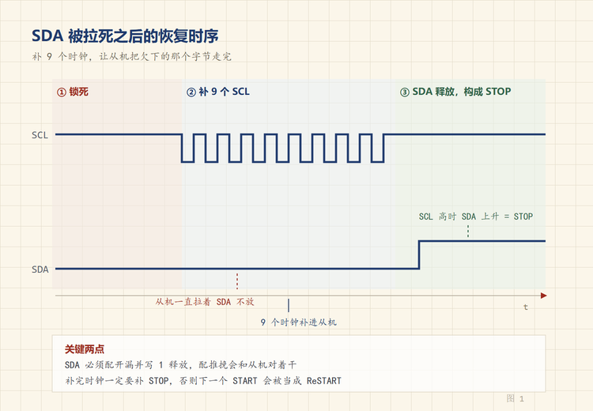
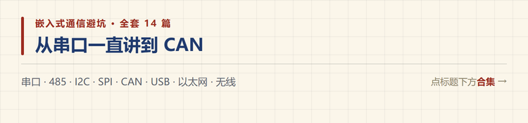

SDA 一直是低电平，I2C 总线锁死了怎么救
🐵 程序小猴 · 嵌入式通信避坑 Vol.05
器件没坏，线也没断，是总线卡在了半个字节中间。
设备在现场跑了三个月，某天早上开机，所有 I2C 器件全部超时。
示波器夹上去，SCL 停在高电平，SDA 贴着 0V 一动不动。
换了块板子就好了，但我知道问题没解决，那块板子换个现场还会再犯。
一、先分清是谁被拉低
打开机壳第一件事，量两根线的电平。
| 现象 | 大概率原因 | 怎么处理 |
|---|---|---|
| SCL 常低 | 从机在做时钟延展，或者 SCL 对地短路 | 查延展超时、查短路 |
| SDA 常低 | 从机停在发送或应答的某一拍 | 走总线恢复流程 |
| 两根都低 | 上电时序问题，或者器件损坏 | 先断电重上，再量 |
| 两根都高 | 总线空闲，主机没发起始条件 | 查软件有没有真的发 START |
SDA 单独被拉低，是最常见的一种，也是最容易救的一种。
二、它为什么会卡住
I2C 是开漏总线，谁都能把它拉低，谁也推不高。
主机读数据的时候，从机要把 0 发出来，就主动拉低 SDA。
正常流程下，主机接着给第 9 个时钟（ACK 位），从机松手，字节结束，继续下一个。
但如果这时候主机复位了呢？
看门狗超时、软件重启、电源跌落，任何一种都会让 SCL 停在某个电平上不再翻转。
从机那边不知道发生了什么，它还在等下一个时钟，SDA 就一直被它拉着。
这就是锁死。 主机想发 START 也发不出去，因为 START 的定义是「SCL 高时 SDA 由高变低」，而 SDA 本来就是低的。

三、9 个时钟的道理
恢复的核心思路很简单，把欠从机的时钟补给它。
从机可能停在字节的任意一位上，最坏的情况是刚发完第 1 位就停了。那它还需要 7 个数据位加 1 个应答位，一共 8 个时钟。
再加上可能停在应答位之前的情况，给 9 个时钟是稳妥的。
9 个时钟走完，从机把这个字节送完，释放 SDA，回到等 START 的状态。

四、恢复流程怎么写
不要用 I2C 外设去做这件事，它这时候大概率已经卡住了。直接操作 GPIO。
伪代码大概是这样。
1. 关掉 I2C 外设，释放引脚
2. SCL 配成推挽输出，初始高
SDA 配成开漏输出，写 1（只释放，不驱动）
3. 读一下 SDA，确认是低（否则不用恢复）
4. 循环 9 次，每轮做三步
SCL 拉低，延时
SCL 拉高，延时
读 SDA，如果变高就跳出
5. 发 STOP，SCL 低 → SDA 拉低 → SCL 高 → SDA 释放
6. 重新初始化 I2C 外设两个细节容易写错。
延时别太短。 这里不是跑 400kHz 的地方，用 100kHz 甚至更慢的节奏，每次 5 到 10 微秒。有些从机对时钟高低电平的最小时间有要求，太急它跟不上。
SDA 要配成开漏，不要配成推挽。 配成推挽输出高电平，等于跟从机对着干，一边拉低一边推高，会烧引脚。开漏写 1 只是「我不拉」，总线还是由从机说了算。
五、STOP 不能省
只发 9 个时钟不发 STOP，很多教程到这儿就结束了。
但从机释放 SDA 之后，它心里的那次事务还没结束。你接着发 START，它会当成 Repeated Start 处理，状态机还是乱的。
STOP 是把这次事务正式收尾，让从机回到空闲。
顺序要记清楚，SCL 高电平期间，SDA 由低变高，才是 STOP。
所以是先把 SDA 拉低（此时 SCL 还是低），再把 SCL 拉高，最后释放 SDA。
六、什么操作会触发
按我遇到的频率排。
- 读操作中途 MCU 复位。最常见，尤其是带看门狗的产品。
- 上电时序不对。从机先上电，主机后上电，主机初始化时总线已经被拉住了。
- 热插拔。器件在通信过程中被拔掉或者插上。
- 时钟延展超时。主机等不及，直接放弃。
- 电源跌落。从机复位了，主机没复位，两边状态对不上。
前两条占了大部分。
七、怎么预防
恢复代码写完只是止血，还得让它自己触发。
上电就跑一次。 初始化 I2C 之前先执行恢复流程，成本几毫秒，能挡掉上电时序那一类问题。
传输失败就触发。 连续 NACK 或者超时三次，跑一次恢复，再重试一次。别无限重试，会卡死主循环。
看门狗复位后第一件事也是恢复。 很多产品复位后直接初始化外设，这时候总线还是锁着的。
硬件上加缓冲器。 像 PCA9548 这种 I2C 多路复用器，每一路可以单独隔离，某一路挂了不影响其他路。多器件产品值得加。
有些 MCU 的外设自带 bus clear 功能，查一下手册，有就直接用，比自己写 GPIO 时序稳。
八、按这个顺序查
| 顺序 | 查什么 | 怎么查 | 典型现象 |
|---|---|---|---|
| ① | 谁被拉低 | 万用表或示波器量 SDA/SCL | 先分方向 |
| ② | 是不是短路 | 断电量对地电阻 | 一直低，恢复无效 |
| ③ | 跑恢复流程 | 手动发 9 个时钟 | 能恢复就是锁死 |
| ④ | 补 STOP | 恢复后能不能正常读写 | 恢复后仍异常 |
| ⑤ | 上电时序 | 查两路电源的上升沿 | 冷启动才失败 |
| ⑥ | 复位后有没有恢复 | 看看门狗重启路径 | 跑一段时间才死 |
| ⑦ | 器件本身 | 换一个同型号试 | 单个器件反复锁 |
第 ③ 步是分水岭。发完 9 个时钟 SDA 能松开，说明是协议层锁死，代码能救；松不开，那就是硬件问题，别再折腾软件了。

I2C 锁死这件事，麻烦的地方在于它不像断线那样立刻暴露，而是攒到某个时机才发作。
你遇到过最诡异的 I2C 故障是什么？评论区说说。
📌 这是「嵌入式通信避坑」第 5 篇，全系列 14 篇，从串口一路讲到 CAN 和无线选型。
💬 觉得有用就点个在看，下一篇换到板外，讲 SPI 的四种模式为什么配错就只收到 0xFF。